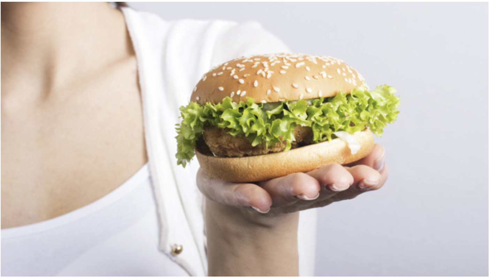

-
Unhealthy diets can lead to long-term effects on the body. Diets filled with oils, refined carbohydrates, fats and highly processed foods can lead to obesity. Obesity is linked to chronic conditions and diseases like Type 2 diabetes, heart disease, high blood pressure, sleep apnea and some cancers. A diet rich in whole grains, fruits and vegetables gives us the nutrients that we need to fight disease and maintain wellness.
-
“The preparation method and the types of ingredients the food contains make it unhealthy,” says Andari. “Sodium, sugar and fat (saturated fat and trans-fat) are key ingredients one should always monitor when eating out and shopping at the grocery store. The American Heart Association recommends keeping the consumption of saturated fat to less than 7 percent and the consumption of trans-fat to less than 1 percent of an individual’s daily calories.”
